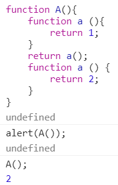
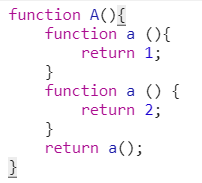
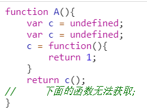
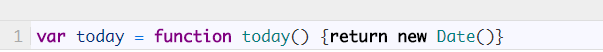

【JS-task02】函数申明与函数表达式的区别
小课堂【武汉-266期】
分享人：邱天成
目录
1.背景介绍
2.知识剖析
3.常见问题
4.解决方案
5.编码实战
6.扩展思考
7.参考文献
8.更多讨论
1.背景介绍
什么是函数声明？
函数声明可以定义命名的函数变量，而无需给变量赋值。函数声明是一种独立的结构，不能嵌套在非功能模块中。可以将它类比为 变量声明。就像变量声明必须以“var”开头一样，变量声明必须以“function”开头。函数名在自身作用域和父作用域内是可获取的（否则就取不到函数了）。
什么是函数表达式？
函数表达式将函数定义为表达式语句（通常是变量赋值）的一部分。通过函数表达式定义的函数可以是命名的，也可以是匿名的。函数表达式不能以“function”开头（下面自调用的例子要用括号将其括起来）。函数名（如果有的话）在作用域外是不可获取的（与 Function Declaration 对比）。
2.知识剖析
函数声明
实例：
函数表达式
实例:

上面的代码实际执行顺序
 3.常见问题
函数表达式创建的函数大多是匿名的。在代码调试的时候比较麻烦；
4.解决方法
建议使用 Named Function Expressions
5、编码实战
6、扩展思考
哪些地方不能用函数声明？
官方是禁止在非功能模块（比如 if）中使用函数声明的。但是所有浏览器都支持，但是各自的解释方式不同。
7、参考文献：
参考一： 函数申明与函数表达式的区别
8、更多讨论
谢谢大家
制作人： 邱天成